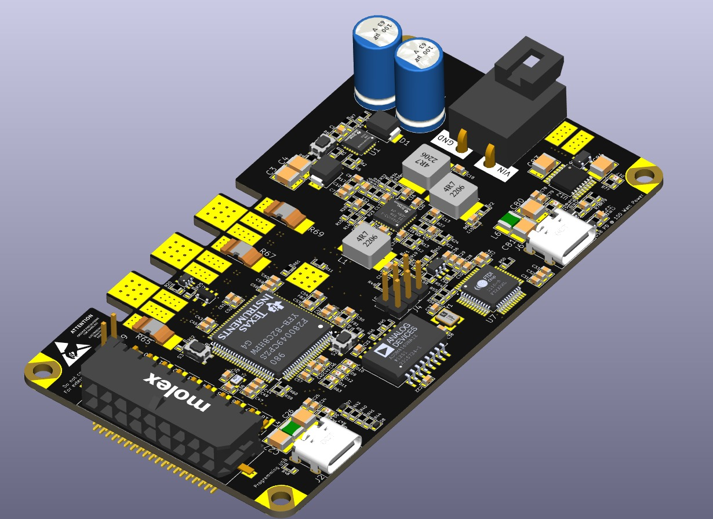

PL Driver Evaluation Board PL Sürücü Değerlendirme Kartı
Function: İşlev: A high-power, versatile driver evaluation board based on the TI TMS320F280049C. This board is designed for precise motor control applications with a high-efficiency power stage and advanced control algorithms by extending the full power of TMS320F280049C. TI TMS320F280049C tabanlı, yüksek güçlü ve çok yönlü bir sürücü değerlendirme kartı. Bu kart, TMS320F280049C'nin tüm işlem gücünü kullanarak; yüksek verimli güç donüşümü ve gelişmiş kontrol algoritmaları ile hassas motor kontrol uygulamaları için tasarlanmıştır.
- Microcontroller: Mikrodenetleyici: TI TMS320F280049C based architecture TI TMS320F280049C tabanlı mimari
- Power Ratings: Güç Değerleri: 9V - 50V Input Voltage, Nominal 300W Output Power 9V - 50V Giriş Gerilimi, Nominal 300W Çıkış Gücü
- Hardware Features: Donanım Özellikleri: USB-C PD (@ 100W), eFuse protection, and Internal Magnetic Encoder USB-C PD (@ 100W), eFuse koruması ve Dahili Manyetik Enkoder
- Communication & Interface: Haberleşme & Arayüz: CANBus, UART, SPI, I2C, and JTAG programmable CAN Bus, UART, SPI, I2C ve programlanabilir JTAG yapısı
- Programming: Programlama: Isolated USB Programmer for safe development Güvenli donanım geliştirme için İzole USB Programlayıcı